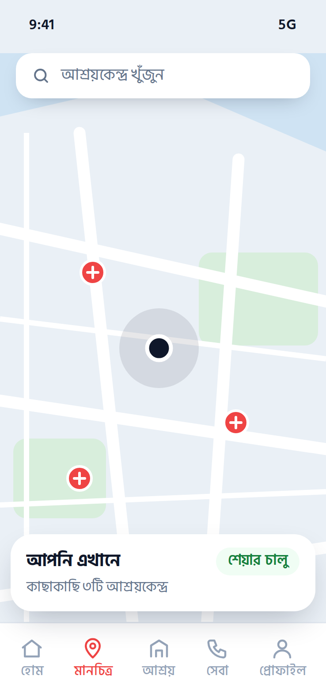
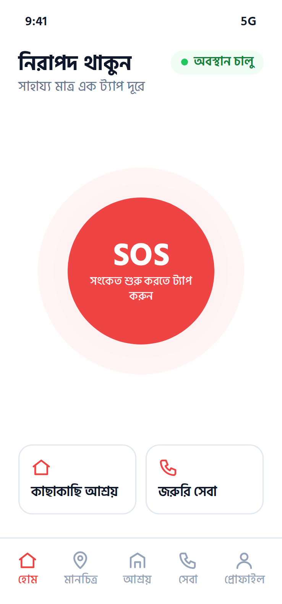

জরুরি SOS সংকেত
হোম স্ক্রিনের SOS বোতাম থেকে দ্রুত জরুরি সংকেত শুরু করা যায়।
বন্যা, ঘূর্ণিঝড় বা যেকোনো দুর্যোগে কাছাকাছি নিরাপদ আশ্রয়, জরুরি সেবা এবং প্রয়োজনীয় সহায়তা খুঁজে নিন এক প্ল্যাটফর্মে।
RescueLink একটি মোবাইল অ্যাপ, যা বিপদের সময় জরুরি সহায়তা পেতে এবং আশপাশের নিরাপত্তা-সুবিধা খুঁজে নিতে সাহায্য করে।
জরুরি পরিস্থিতিতে সঠিক নম্বর, কাছের আশ্রয়কেন্দ্র বা নিজের অবস্থান জানানোর উপায় খুঁজতে গিয়ে মূল্যবান সময় নষ্ট হয়। RescueLink এই সুবিধাগুলো এক অ্যাপে একসঙ্গে রাখে।
RescueLink জরুরি সহায়তা পেতে সহায়ক একটি অ্যাপ; এটি সরকারি জরুরি সেবার বিকল্প নয়।

জরুরি পরিস্থিতিতে প্রয়োজনীয় তথ্য ও নিরাপত্তাসংক্রান্ত সুবিধা সহজে খুঁজে পেতে RescueLink-এর ফিচারগুলো ব্যবহার করুন।
হোম স্ক্রিনের SOS বোতাম থেকে দ্রুত জরুরি সংকেত শুরু করা যায়।
বিপদের সময় নিজের বর্তমান অবস্থান শেয়ার করা যায়।
আশপাশের আশ্রয়কেন্দ্রের তালিকা ও অবস্থান দেখা যায়।
পুলিশ, ফায়ার সার্ভিসসহ প্রয়োজনীয় জরুরি সেবার যোগাযোগের তথ্য এক জায়গায়।
মানচিত্রে নিজের অবস্থান ও আশপাশের গুরুত্বপূর্ণ স্থান দেখা যায়।
ব্যক্তিগত তথ্য, জরুরি যোগাযোগ ও অবস্থানের অনুমতি নিজের নিয়ন্ত্রণে রাখুন।
এখানে বর্ণিত ফিচারগুলো অ্যাপের পরিকল্পিত সুবিধা।
সহজ কয়েকটি ধাপে RescueLink-এর উপলভ্য সুবিধাগুলো ব্যবহার করুন।
মোবাইল অ্যাপ থেকে উপলভ্য জরুরি ও নিরাপত্তাসংক্রান্ত সুবিধাগুলো দেখুন।
আপনার পরিস্থিতি অনুযায়ী উপযুক্ত ফিচার নির্বাচন করুন।
অ্যাপের উপলভ্য সুবিধা অনুযায়ী অবস্থান শেয়ার করুন অথবা কাছাকাছি নিরাপত্তাসংক্রান্ত তথ্য খুঁজুন।
উপলভ্য আশ্রয়কেন্দ্র, জরুরি সেবার যোগাযোগের তথ্য অথবা অন্যান্য প্রাসঙ্গিক রিসোর্স দেখুন।
RescueLink তথ্য খুঁজে পেতে ও শেয়ার করতে সহায়তা করে। অ্যাপটি স্বয়ংক্রিয়ভাবে উদ্ধারকারী দল বা কর্তৃপক্ষের কাছে সংকেত পাঠায় — এমন কোনো দাবি করা হচ্ছে না।
দেখে নিন RescueLink মোবাইল অ্যাপের বিভিন্ন স্ক্রিন ও ব্যবহারকারীর অভিজ্ঞতা।

এখানে দেখানো স্ক্রিনগুলো নমুনা প্রদর্শনী; নাম, দূরত্ব ও যোগাযোগের তথ্য উদাহরণমাত্র।
RescueLink সম্পর্কে জানতে বা আপনার মতামত জানাতে আমাদের সঙ্গে যোগাযোগ করুন।